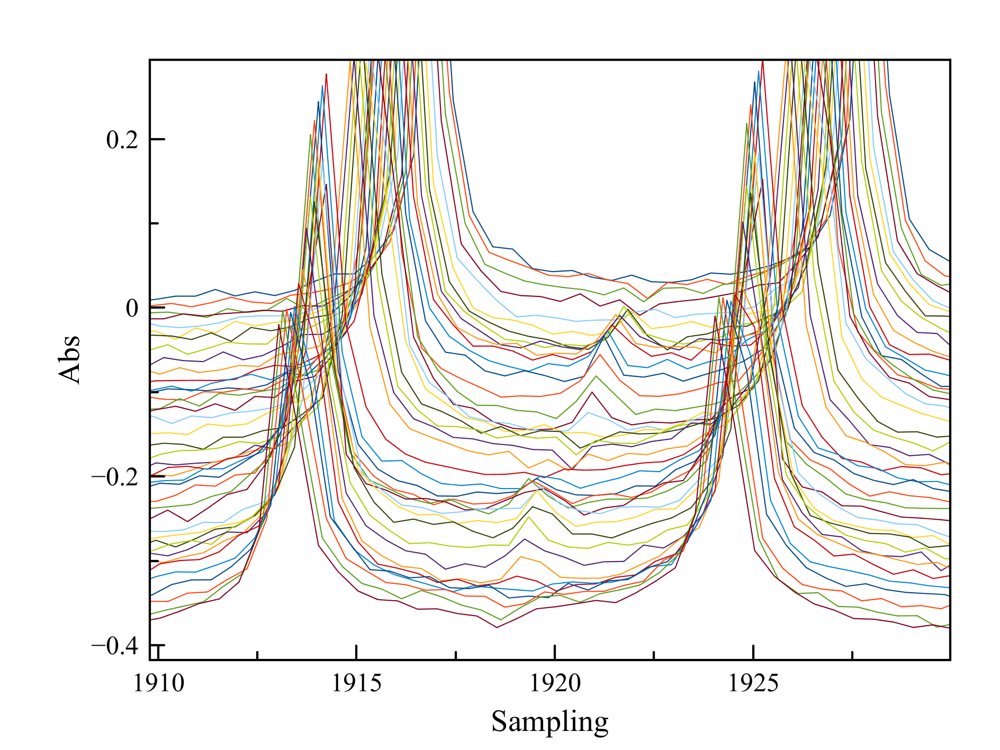
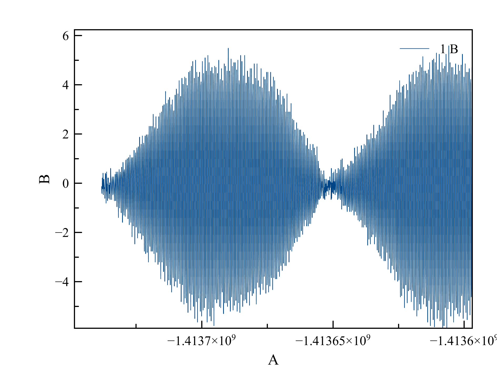
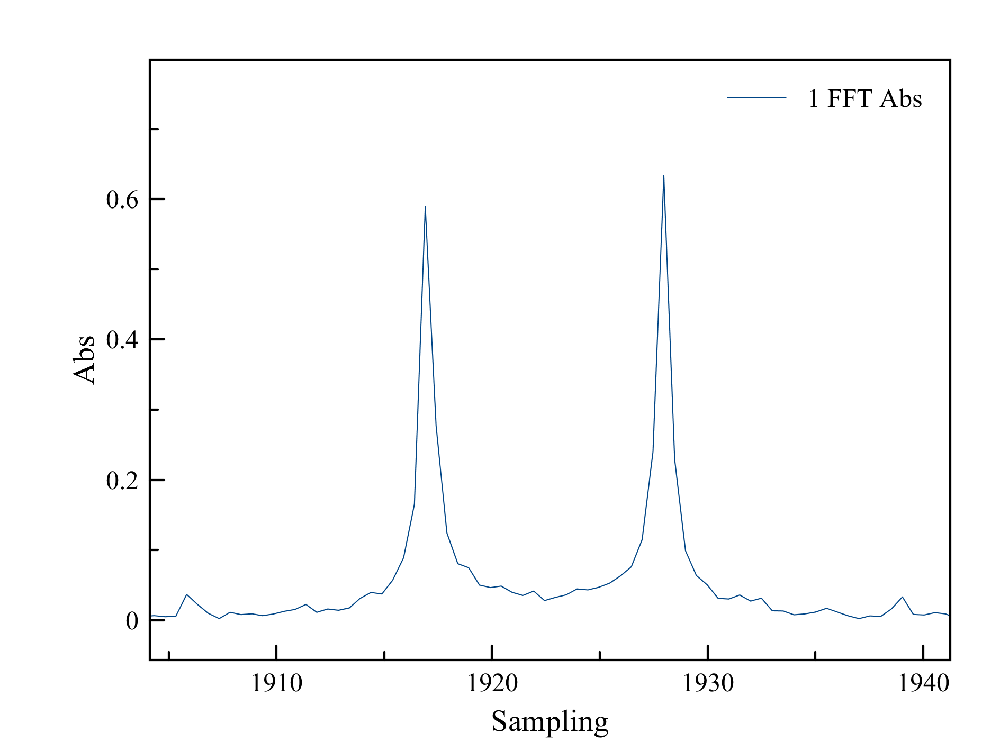
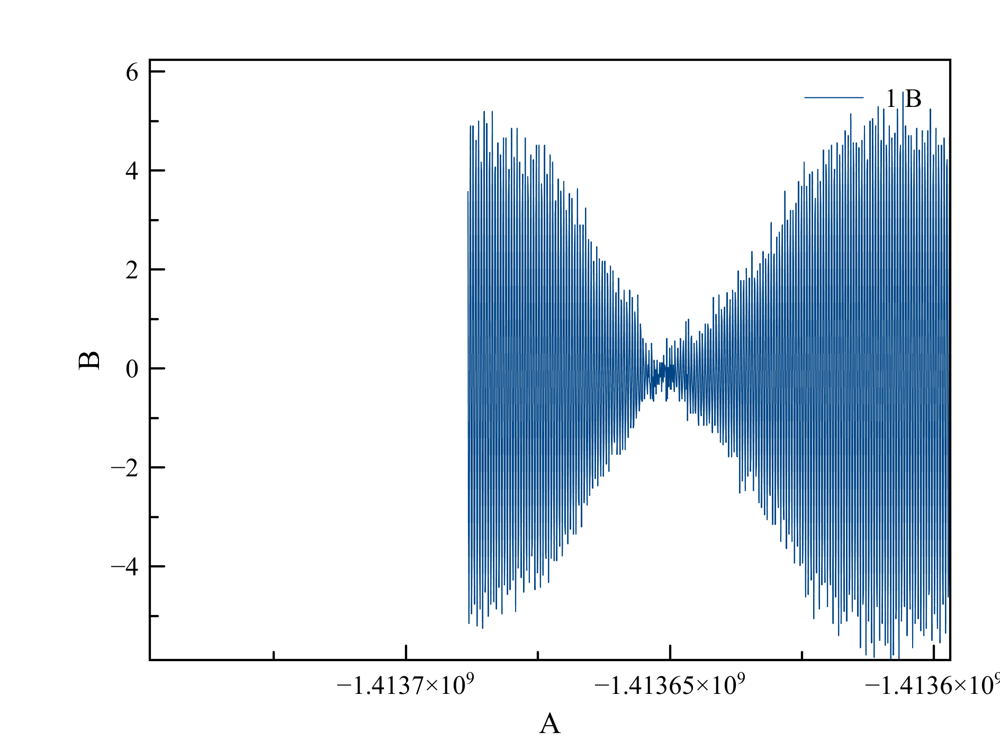
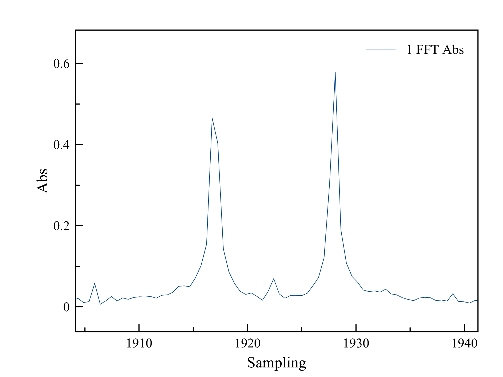

02.07.2019
Открытие не состоялось...
Еще перед уходом из лаборатории в тот день я обратил внимание, что центральный пик появляется и при малой длительности импульса, если просто менять deadtime после импульса. Этим я и занялся сегодня.
Сначала частота импульса была 725Гц и его длительность 2 мс. Deadtime менял от 30 до 400 мс. При этом средняя линия плавно появлялась и исчезала два раза.

Затем, я решил проверить, есть ли эффект при возбуждении на частоте протонов. Эффект повторился... Меня стали терзать сомнения, является ли эта линия следствием изменения взаимодействия ядер фосфора с протонами...
Я провел последний эксперимент, который подтвердил, что это следствие изменения начальной фазы самого сигнала.
Я просто быстро выключал поляризацию (без возбуждающего импульса) и наблюдал спад свободной индукции, меняя промежуток между окончанием поляризации и началом регистрации сигнала. Всё в точности повторилось.
Дело в том, что сигнал представляет собой амплитудную модуляцию с несущей частотой, равной частоте ЯМР и модуляцией на частоте 11 Гц.
Следующие рисунки всё объясняют:
 
 
На первой паре картинок - сигнал и его спектр. На второй - тот же самый сигнал, но с удалёнными первыми 540 отсчётами и его спектр.
Возникающая центральная линия - это небольшой (10% от боковых линий) набор амплитуды в середине спектра из-за максимальной амплитуды в начале сигнала. Амплитуда центральной линии в таком случае не может быть больше потому что наш сигнал представляет собой спад из примерно 20 модуляций. Если модуляции представляют собой полные периоды, то в центре спектра всё скомпенсировано и центральной линии нет. Если сигнал начинается с неполного периода модуляции, то получется небольшой перебор амплитуды на несущей частоте (в центре спектра). То есть это простой математический артефакт...